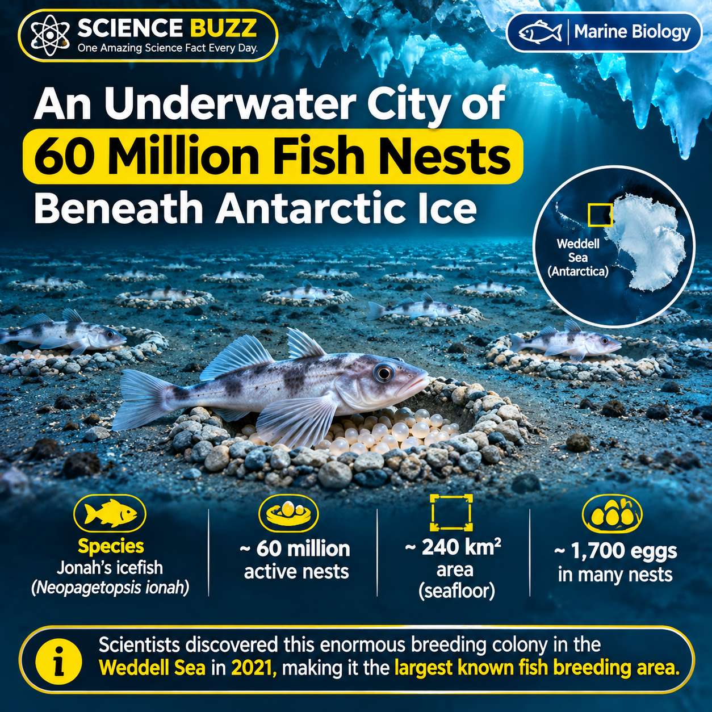

In February 2021, researchers aboard the German research vessel Polarstern discovered an extraordinary underwater breeding ground beneath the Antarctic ice in the Weddell Sea. The colony belongs to a species called Jonah's icefish (Neopagetopsis ionah). Scientists estimated that the area contained approximately 60 million active fish nests, spread across at least 240 square kilometers of the seafloor. Each circular nest is roughly 60 centimeters wide and is typically guarded by an adult fish protecting its eggs. Researchers estimated that many nests contained around 1,700 eggs. The discovery was made using an underwater camera system towed across the ocean floor, at depths of approximately 420–535 metres. This remarkable ecosystem is considered the largest continuous fish breeding colony discovered to date.
An Underwater City of 60 Million Fish Nests Beneath Antarctic Ice
Scientists discovered an enormous icefish breeding colony covering approximately 240 square kilometres beneath the Weddell Sea.

Source: Alfred Wegener Institute (AWI)